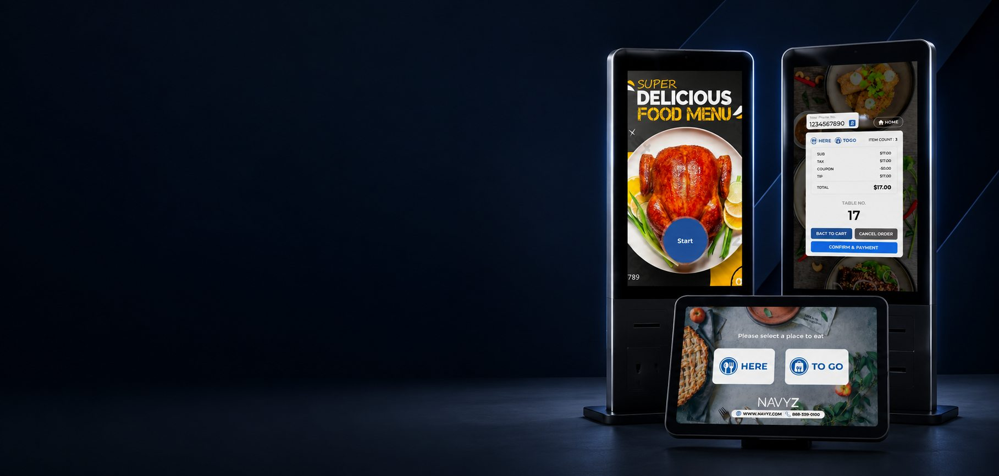
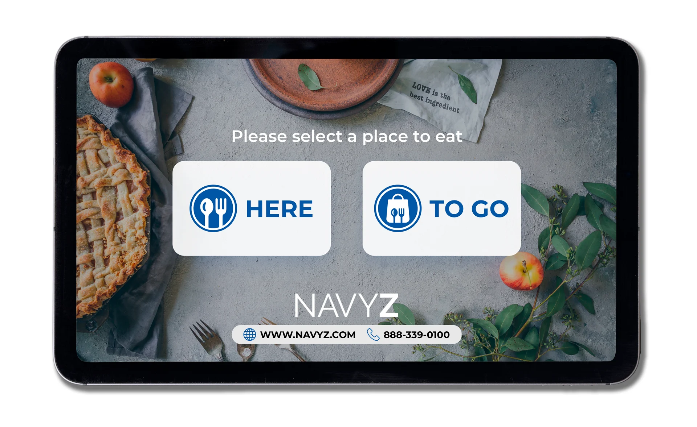
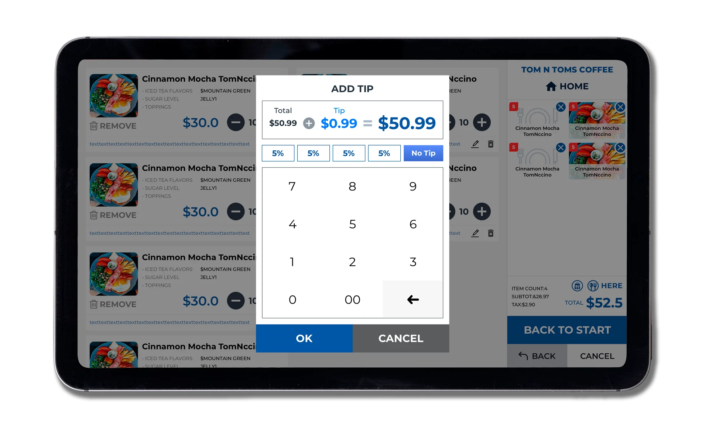
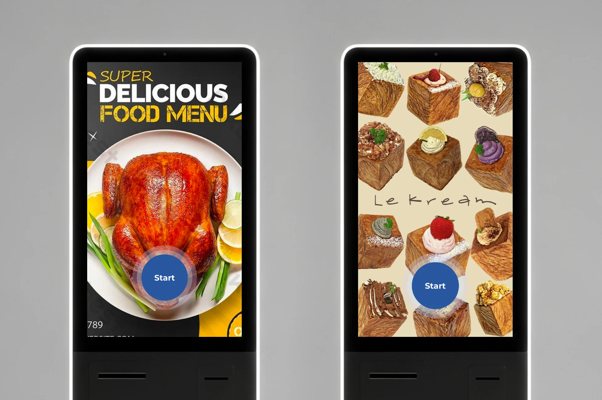
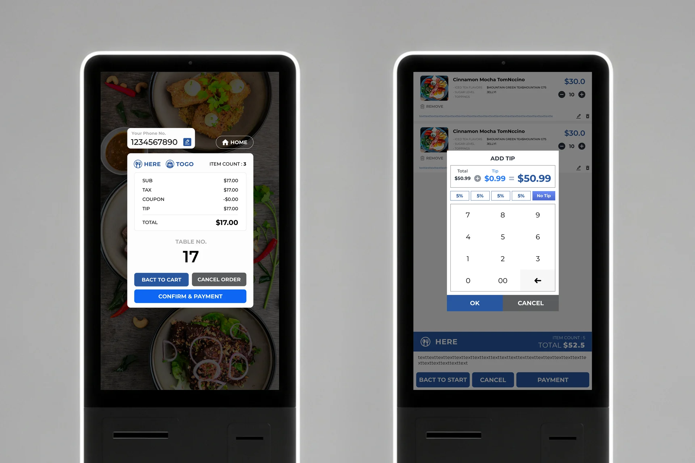

KIOSK SYSTEM
운영 중인 키오스크 시스템의 UI 개선과 신규 화면 퍼블리싱을 담당했습니다. 다양한 화면 규격에 맞춰 레이아웃을 구현하고, 공통 결제 팝업과 브랜드별 색상 테마를 정리했습니다.
Overview
프랜차이즈 매장에서 사용하는 셀프 주문 키오스크입니다. 매장과 브랜드에 따라 서로 다른 디자인을 적용하며, 가로형·세로형 기기에서 메뉴 선택부터 결제까지 이어지는 주문 화면을 제공합니다.
My Role
기존 화면의 디자인 변경 사항을 반영하고 신규 페이지를 퍼블리싱했습니다. 공통 결제 팝업의 마크업과 스타일을 정리하고, 6가지 색상 테마를 적용해 브랜드별로 활용할 수 있도록 작업했습니다.
Build
메뉴 목록·옵션 선택·장바구니·결제·영수증 등 주문 과정의 화면과 팝업을 구현·수정했습니다. 가로형 1366×768·1024×768, 세로형 768×1366 해상도에 맞춰 레이아웃을 조정했습니다.
Stack
- HTML
- CSS
- jQuery
- ASP
Screens




Demo
결제 팝업 공통 마크업 · 스타일 정리
6가지 컬러 테마 적용
가로형 · 세로형 해상도별 레이아웃
옵션 선택 (체크박스 · 라디오)
가상 키보드 · 터치 스크롤
구형 브라우저 대응 · 터치 버튼 효과
코딩
디자인 협업